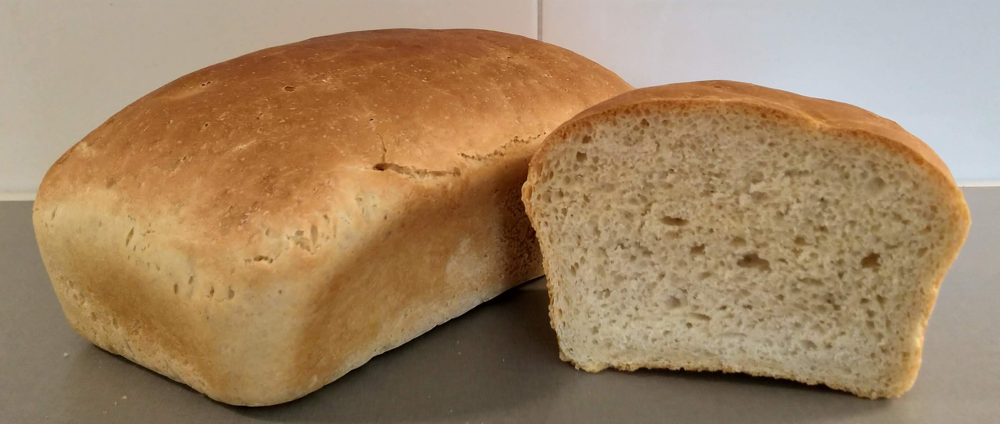

Bröd & brödbakning
från Amanuensbagaren
Startsida
Recept
Historia
Översikt
Äldre stenåldern till antiken
Den industriella revolutionen
Världskrigen och 1900-talet
Svensk brödhistoria
Brödbakningsprocessen
Översikt
Steg 1: Degberedning
Steg 2: Knådning
Steg 3: Degbearbetning
Steg 4: Formning
Steg 5: Fermentering
Steg 6: Avbakning
Steg 7: Nedkylning och förvaring
Rågbröd
Råvaror
Överblick
Fett
Jäst
Salt
Degvätska
Socker, sirap och honung
Smaksättare
Vetemjöl
Fullkornsmjöl
Kulturspanmål
Rågmjöl
Korn
Havre
Receptsamling